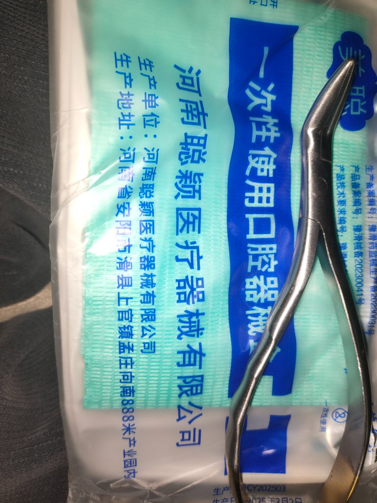
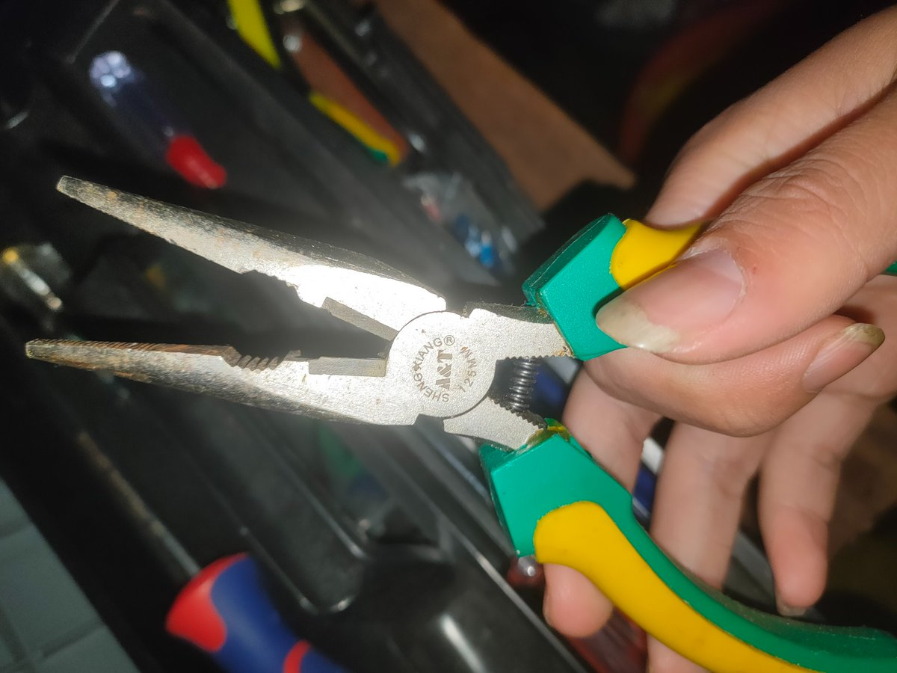

珑梦
@xyu1182202
@IAMGODIE0624 牛逼


【遗忘症】
@IAMGODIE0624
大失败
用尖嘴钳拔掉了一颗坏牙的牙根但是没拔完有残留（如图），还因祸得祸把里面那颗牙的牙根露出来了
用拔牙钳拔另一颗牙拔到整个右脑痛，两眼发黑浑身脱力还是拔不动，还因祸得祸把牙神经露出来了，只能把牙神经吸掉防止一直痛，那颗牙又不敢用尖嘴钳拔，力气用大了会碎掉
布洛芬止痛没卵用，靠 https://t.co/t7jaV4I8IV